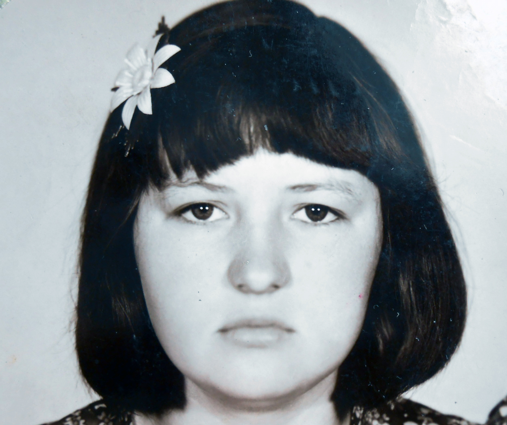

Возраст: 59
Отец: Казаков Федор Васильевич (09.05.1920 - 17.03.1997)
Мать: Казакова (Ничковская) Галина Андреевна (05.06.1925 - 28.07.2002)
Сестра: (Казакова) Нина Федоровна
Брат: Казаков Анатолий Федорович (03.01.1948 - 23.04.2010)
Сестра: Илякова (Казаков) Любовь Федоровна (1950)
Брат: Казаков Александр Федорович (10.01.1953 - 20.07.2001)
Муж: Рыженков Виктор Федорович (29.10.1958)
Дочь: (Рыженкова) Елена Викторовна (16.04.1980)
Сын: Рыженков Виталий Викторович (16.01.1983)
Родилась: 19.11.1961. Отец: Казаков Федор Васильевич. Мать: Казакова (Ничковская) Галина Андреевна.
Вышла замуж. Муж: Рыженков Виктор Федорович.
Родилась дочь: (Рыженкова) Елена Викторовна, 16.04.1980. Отец: Рыженков Виктор Федорович.
Родился сын: Рыженков Виталий Викторович, 16.01.1983. Отец: Рыженков Виктор Федорович.
. |